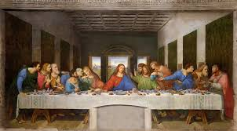
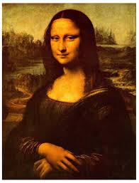

|
|||||||||||||||||||||||||||||||||
Biography
Leonardo da Vinci was an Italian Renaissance painter, sculptor, and inventor. He was born on April 14, 1452, in a small town in Tuscany, Italy, but his interest in painting would only begin when he was 14 and became the apprentice of Andrea del Verrocchio, where he learned skills such as metalworking, carpentry, painting, and sculpting. He started his own workshop at 20, but still worked on and off with Verrocchio for 5 more years. Around this time he was tried for sodomy, which was a crime punishable by death. He was found not guilty.
His whereabouts for the next two years are unknown, but in 1478, he recieved his first commision for an alter inside the Palazzo Vecchio in Florence and 3 years after that, the Augustan Monks gave da Vinci a commision to paint "Adoration of the Magi". He would never finish either of these becuase Lorenzo de Medici tasked him to make a silver lyre and bring it to Milan for Ludovico Sforza, the ruler of Milan. Da Vinci then sent Ludovico a letter in which he proclaimed he was a master of military engineering and sent him sketches of such things as a giant crossbow and a tank. The letter was a success and da Vinci would work for Ludovico for the next 17 years where he studied science and art, as he believed studying science would mold him into a better artist. He wrote his findings in a journal, but this was never published. In any case, da Vinci was still an artist and Ludovico had him paint such works as "Virgin of the Rocks" and "The Last Supper", the latter demonstrating his ability to convey emotion through facial expressions and body language. He also was tasked build a large bronze statue of Ludovico's father, but when war with France ensued, the statue's construction was put on hold becuase the metal was needed for cannons. The unfisished statue was destroyed when the French ran through Milan, prompting the Sforzas and da Vinci to flee Milan.
Da Vinci the returned to Florence to work as a military engineer for Cesare Borgia, comander of the papel forces and illegitimate son of the Pope. At this time, da Vinci may have worked with Machiavelli to move the Arno river away from rival Pisa. Da Vinci started work on "Battle of Anghiari" but the painting was so big it deteriorated before he could finish it. He then began work on the "Mona Lisa". It is not truly known who the painting was painted after, but such people as Princess Isabella of Naples, someone he met at random, da Vinci's mother, or even da Vinci's apprentice Salai dressed in women's clothes have been speculated to be the paintings subject. The most likely answer, perhaps, is Lisa del Giocondo, the wife of a florenrine silk merchant. This is supported not only by the the fact that an early biographer clamed so, but also that the painting's orrigional Italian name was "La Giocondo". Who ever commisioned the painting never recieved it, as the work was forever a work in progress wih da Vinci never quite feeling finished with it. It now recides in the Louvre, as a treasured masterpiece viewed by millions every year.
Ironcially, later in his life da Vinci moved back to the French occupied Milan to work for the general who forced him to flee. The general wanted a large horse to be built for his tomb, but it was to large to be actually built. Da Vinci and his apprentices moved to Rome due to the temporary expulsion of the French from Milan and began to work for the Pope, who gave da Vinci and his apprentices lavish rooms, but not a lot of painting to do. Therefor, da Vinci studied science and mathematics until he then moved to France becuase the new French Monarch gave him the title of "Premier Painter and Engineer and Architect to the King". In actuality, he did nothing but study and attempt to make a mechanical lion that could walk and open its mouth to revial reveal a bunch of lillies. He died on May 2, 1519 aged 67. Da Vinci's assistant at the time, Melzi, became the heir to da Vinci's estate, but the Mona Lisa was given to Salai.
................................................ (Bibliography)